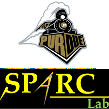

Experience
Research and industry, 2018 to now. Click on each to know more!
Current

Graduate Research Assistant
SPARC Lab, Purdue UniversityApplied ML for healthcare, circuits, and wearable systems, along with low-power hardware and signal processing.
Previous Stops Along the Way
ML Intern
Qualcomm Summer 2025 and 2026 analog/RF circuit optimizationDeveloper
TCS (R&I) 2020 – 2021 automated ML & NLP systemsResearch Intern
Yuan Ze University Summer 2020 anesthesia depth via ECG/PPGML Intern
TCS Early 2020 EV battery life predictionResearch Intern
IIT Kharagpur Summer 2019 FPGA-based TRNG design